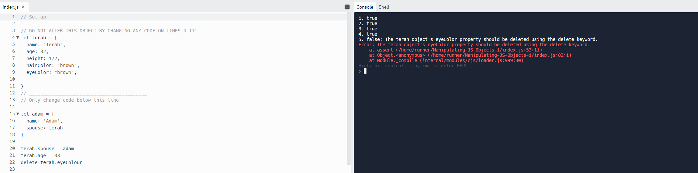

Sprint 4 - Problem Solving
Blocked on a simple problem:
While I was attempting the ‘Manipulating JS object’ kata exercise I came across a very simple problem that took me more than 15 minutes to solve.

Here, I am instructed to delete terah object’s eyeColor property using the delete keyword. Line 22, I wrote ‘delete terah.eyeColour’ and this line of code seem to not to the trick. This bugged me a lot as I was sure that I wrote the right code. I tried console.logging, Googling and reading error messages. But what made me spot the error was the rubber ducky method. I was so frustrated I started telling myself what this simple line of code was meant to do. Then I spotted the error, spelling error. I wrote ‘eyeColour’ instead of ‘eyeColor’. Throughout the process I felt helpless and annoyed as I had all these other works that needed to be completed and I was stuck on this one simple issue. I started laughing out loud after realising the issue. I learned that “it’s the little things that count.”
Reflect on how confident you feel using each of these problem-solving techniques/processes:
Pseudocode: Breaking down the code into small steps helped me a lot. This makes it easier for me to Google search more efficiently. I feel fairly confident using this technique and would like to give 8/10.
Rubber ducky method: Also, helpful as this normally helped me to spot out silly small mistakes. 8/10
Reading error messages: Not so confident when it comes to reading error messages. 5/10
Console.logging A lot of the times this technique didn’t really guided me to the right path. But I know how important it is to console.log my code so I will keep on try to improve this technique. 5/10
Googling: My best friend. Such powerful tool as it has answer to all of my problems. 9/10.
Asking your peers & coaches for help: Usually, my last resort. I’m just not really used to asking others for help. 4/10